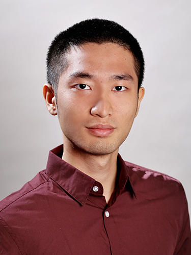

|  |
I am a Research Scientist at the LLM reasoning and planning team of ByteDance. Previously, I was a machine learning engineer at TikTok E-commerce Recommendation, a summer associate at Goldman Sachs Asset Management, a research intern at Siemens and Microsoft. I completed my M.A. and Ph.D. degrees at Electrical and Computer Engineering, Princeton University, where I was very fortunate to be advised by Prof. Peter J. Ramadge. Before Princeton, I completed my B.S. degree at Electrical Engineering, National Taiwan University. email: tinghanfan at gmail dot com Find me at Google Scholar and LinkedIn. |
(* denotes equal contribution)